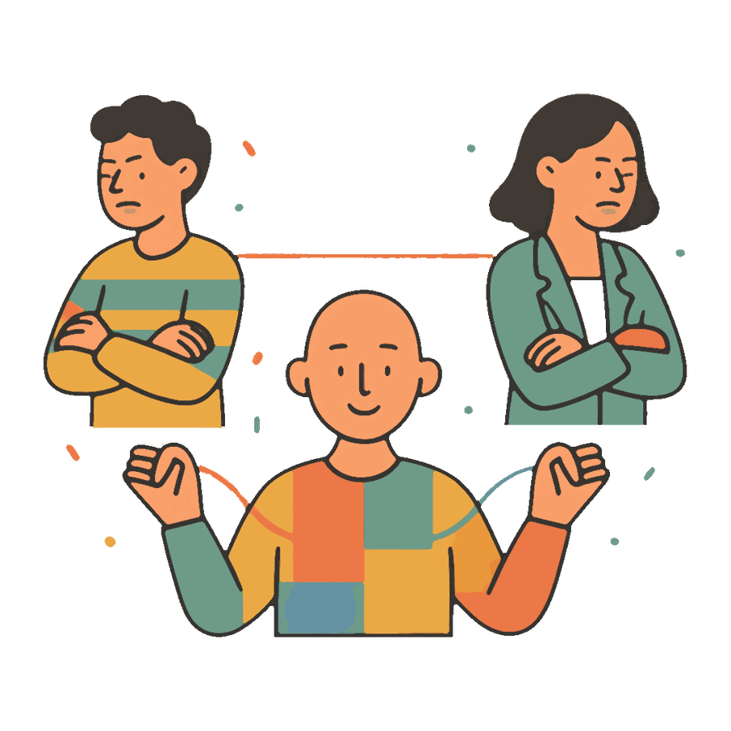
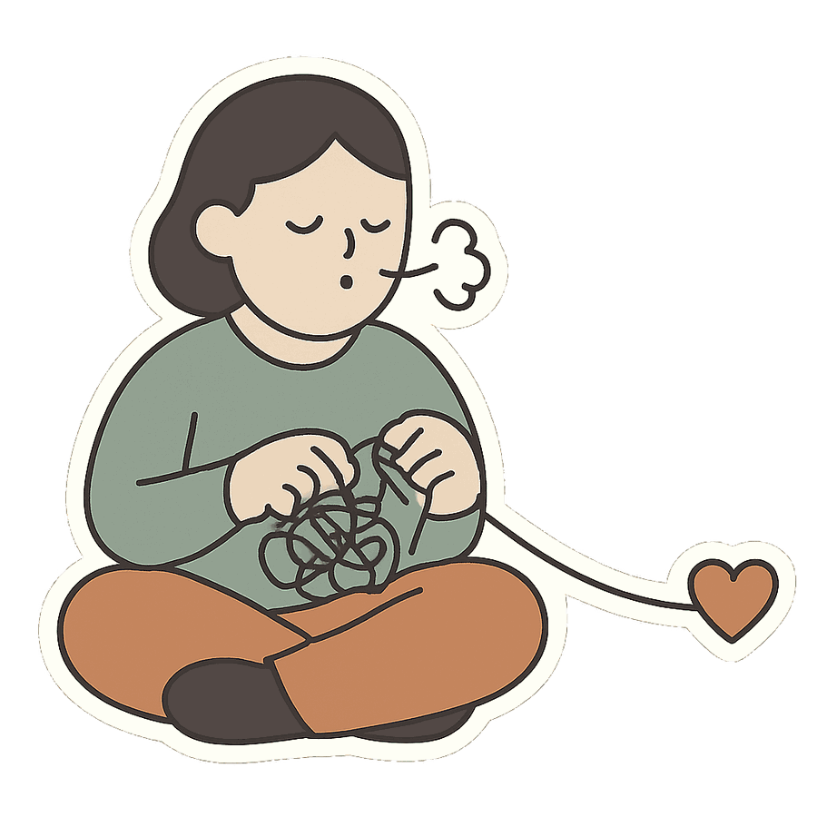
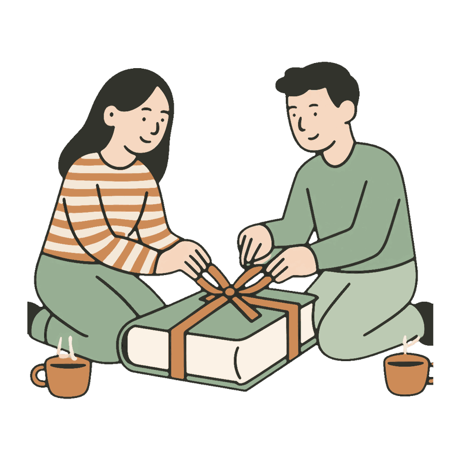

Нейтральный AI-медиатор для двоих
Когда сами уже не слышите друг друга, нужен спокойный третий. Каждый из вас рассказывает свою версию боту приватно, а Медиатор помогает понять, что происходит, и начать разговор без второй ссоры.
01
Медиатор не судья и не адвокат одной из сторон. Он не назначает виноватого и не подтверждает «я хороший, он плохой», как это делает обычная нейросеть, которая слышит только вас.
Внутри подходы, которыми работают семейные терапевты: метод Готтмана, ненасильственное общение и эмоционально-фокусированная терапия.

02
Каждый пишет боту в личке: со злостью, с обидой, как есть. Партнёр этих сообщений не видит, они даже не попадают в его разбор. Наедине с ботом люди быстро перестают формулировать обвинения и говорят о том, что болит на самом деле.
Второй заходит по вашей ссылке за десять секунд. А если пока не готов, работайте в режиме «разобраться самому».
03
Каждый получает персональный разбор: что произошло, какие чувства и потребности стоят за вашей реакцией и какой маленький шаг снизит напряжение. Плюс готовые первые фразы для разговора, чтобы не начинать его с упрёка.
Резкое сообщение можно прогнать через переводчик фраз: смысл останется, яд уйдёт.

04
Когда оба готовы, вы вместе ставите точку: каждый выбирает итог, бот пишет общий финал для двоих. Через день он вернётся и спросит, удалось ли поговорить, а если одна и та же тема ходит по кругу месяцами, заметит это и скажет.
Разбор можно сохранить в PDF и, если захотите, показать живому специалисту.

Обычная нейросеть слышит одну сторону. Вы рассказываете свою версию, в ней вы правы, и умный собеседник охотно это подтверждает. Из чата выходишь ещё увереннее в своей правоте, а мириться с подтверждённой правотой только труднее.
Медиатор слышит обоих и по построению не встаёт ни на чью сторону. Его задача не выдать вердикт, а сделать так, чтобы два человека наконец услышали друг друга.
Ссора с партнёром здесь самый частый случай, но сама механика не про романтику. Она про двоих людей, которые перестали друг друга слышать. Холодная война с мамой. Обида на подругу, которая копилась год. Конфликт с коллегой, из-за которого тяжело идти на работу.
При создании сессии вы просто выбираете тип отношений: пара, семья, друзья или коллеги. Медиатор подстроит разбор под контекст, а правила остаются те же: каждый говорит приватно, и виноватым не назначают никого.
Нет. Ваши сообщения видит только бот. Партнёру он их не пересказывает и не цитирует, а о второй стороне в разборе говорит только как о предположении.
Работайте в режиме «разобраться самому»: бот поможет понять, что вас задело, и подготовит первые фразы для разговора. Пригласить партнёра в эту же сессию можно в любой момент позже.
Нет, и это принципиально. Вердикт «кто прав» помогает выиграть спор, а помириться помогает понимание, что происходит с каждым из вас. Медиатор делает второе.
Нет. Это первая помощь в конкретной ссоре и подготовка к разговору. Если тема тянется годами или в отношениях есть насилие, бот прямо порекомендует живого специалиста и даст контакты помощи.
Сессии удаляются автоматически через 7 дней, перед удалением бот предупреждает. Стереть всё раньше можно одной кнопкой «Удалить мои данные».
Звёзды покупаются в пару нажатий внутри Telegram картой любой страны, поэтому подписка работает и в России, и во всём СНГ. Платит только тот, кто создаёт сессии: партнёр не платит никогда.
Чаще всего Медиатора используют пары, но те же сессии работают для конфликтов с родителями, друзьями и коллегами: при создании сессии вы выбираете тип отношений.
Первый разбор бесплатный. Десять минут, и у вас будет понимание, что произошло, и первая фраза для разговора.